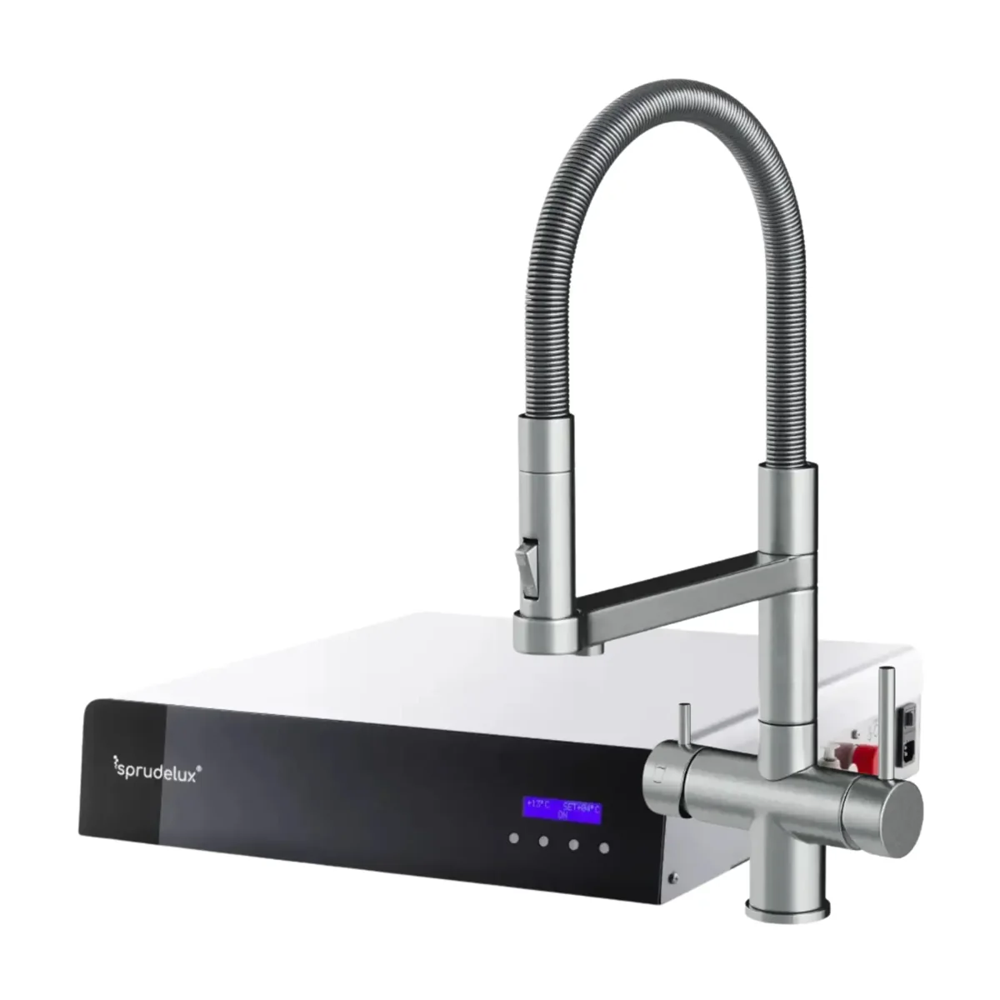

Water Dispenser
SPRUDELUX SPRUDELUX® ULTRA FLAT - Premium Sprudelanlage | nur 10,5 cm flach | hoher CO2 Gehalt | geräuscharm | Edelstahl
SPRUDELUX® ULTRA FLAT - Premium Sprudelanlage | nur 10,5 cm flach | hoher CO2 Gehalt | geräuscharm | Edelstahl | Made in Italy 🇮🇹.
1.316,24 €
Technische Daten
| Artikelnummer | 22750 |
| Schlagwörter | Palettenversand |
| Armatur | ohne Armatur oder 5-Wege STATEMENT Edelstahl oder 5-Wege STATEMENT Schwarz oder 5-Wege Isabella L Schwarz oder 5-Wege Isabella L Edelstahl oder 5-Wege Isabella L Chrom oder 3-Wege Zusatzarmatur Lara U Edelstahl oder 3-Wege Zusatzarmatur Lara C Edelstahl |
| Co2 Flasche | Ohne Co2 Flasche oder 2KG oder 6KG oder 10KG |
| Ausgabearten | Still oder Still gekühlt oder Soda |
| Farbe | Schwarz oder Silber |
| Bauart | Untertisch |
| Anschlusstyp | Festwasseranschluss |
| Osmose | Nein |
Beschreibung
SPRUDELUX® ULTRA FLAT - Premium Sprudelanlage | nur 10,5 cm flach | hoher CO2 Gehalt | geräuscharm | Edelstahl | Made in Italy 🇮🇹.
Datenhinweis
Preis, Bild und technische Angaben stammen von der verlinkten offiziellen Produktseite. Varianten und Verfügbarkeit können sich ändern.